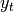
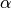

Computational tools¶
Statistical functions¶
Percent Change¶
Both Series and DataFrame has a method pct_change to compute the percent change over a given number of periods (using fill_method to fill NA/null values).
In [1]: ser = Series(randn(8))
In [2]: ser.pct_change()
Out[2]:
0 NaN
1 -1.602976
2 4.334938
3 -0.247456
4 -2.067345
5 -1.142903
6 -1.688214
7 -9.759729
dtype: float64
In [3]: df = DataFrame(randn(10, 4))
In [4]: df.pct_change(periods=3)
Out[4]:
0 1 2 3
0 NaN NaN NaN NaN
1 NaN NaN NaN NaN
2 NaN NaN NaN NaN
3 -0.218320 -1.054001 1.987147 -0.510183
4 -0.439121 -1.816454 0.649715 -4.822809
5 -0.127833 -3.042065 -5.866604 -1.776977
6 -2.596833 -1.959538 -2.111697 -3.798900
7 -0.117826 -2.169058 0.036094 -0.067696
8 2.492606 -1.357320 -1.205802 -1.558697
9 -1.012977 2.324558 -1.003744 -0.371806
[10 rows x 4 columns]
Covariance¶
The Series object has a method cov to compute covariance between series (excluding NA/null values).
In [5]: s1 = Series(randn(1000))
In [6]: s2 = Series(randn(1000))
In [7]: s1.cov(s2)
Out[7]: 0.0006801088174310957
Analogously, DataFrame has a method cov to compute pairwise covariances among the series in the DataFrame, also excluding NA/null values.
In [8]: frame = DataFrame(randn(1000, 5), columns=['a', 'b', 'c', 'd', 'e'])
In [9]: frame.cov()
Out[9]:
a b c d e
a 1.000882 -0.003177 -0.002698 -0.006889 0.031912
b -0.003177 1.024721 0.000191 0.009212 0.000857
c -0.002698 0.000191 0.950735 -0.031743 -0.005087
d -0.006889 0.009212 -0.031743 1.002983 -0.047952
e 0.031912 0.000857 -0.005087 -0.047952 1.042487
[5 rows x 5 columns]
DataFrame.cov also supports an optional min_periods keyword that specifies the required minimum number of observations for each column pair in order to have a valid result.
In [10]: frame = DataFrame(randn(20, 3), columns=['a', 'b', 'c'])
In [11]: frame.ix[:5, 'a'] = np.nan
In [12]: frame.ix[5:10, 'b'] = np.nan
In [13]: frame.cov()
Out[13]:
a b c
a 1.210090 -0.430629 0.018002
b -0.430629 1.240960 0.347188
c 0.018002 0.347188 1.301149
[3 rows x 3 columns]
In [14]: frame.cov(min_periods=12)
Out[14]:
a b c
a 1.210090 NaN 0.018002
b NaN 1.240960 0.347188
c 0.018002 0.347188 1.301149
[3 rows x 3 columns]
Correlation¶
Several methods for computing correlations are provided. Several kinds of correlation methods are provided:
| Method name | Description |
|---|---|
| pearson (default) | Standard correlation coefficient |
| kendall | Kendall Tau correlation coefficient |
| spearman | Spearman rank correlation coefficient |
All of these are currently computed using pairwise complete observations.
In [15]: frame = DataFrame(randn(1000, 5), columns=['a', 'b', 'c', 'd', 'e'])
In [16]: frame.ix[::2] = np.nan
# Series with Series
In [17]: frame['a'].corr(frame['b'])
Out[17]: 0.013479040400098763
In [18]: frame['a'].corr(frame['b'], method='spearman')
Out[18]: -0.0072898851595406388
# Pairwise correlation of DataFrame columns
In [19]: frame.corr()
Out[19]:
a b c d e
a 1.000000 0.013479 -0.049269 -0.042239 -0.028525
b 0.013479 1.000000 -0.020433 -0.011139 0.005654
c -0.049269 -0.020433 1.000000 0.018587 -0.054269
d -0.042239 -0.011139 0.018587 1.000000 -0.017060
e -0.028525 0.005654 -0.054269 -0.017060 1.000000
[5 rows x 5 columns]
Note that non-numeric columns will be automatically excluded from the correlation calculation.
Like cov, corr also supports the optional min_periods keyword:
In [20]: frame = DataFrame(randn(20, 3), columns=['a', 'b', 'c'])
In [21]: frame.ix[:5, 'a'] = np.nan
In [22]: frame.ix[5:10, 'b'] = np.nan
In [23]: frame.corr()
Out[23]:
a b c
a 1.000000 -0.076520 0.160092
b -0.076520 1.000000 0.135967
c 0.160092 0.135967 1.000000
[3 rows x 3 columns]
In [24]: frame.corr(min_periods=12)
Out[24]:
a b c
a 1.000000 NaN 0.160092
b NaN 1.000000 0.135967
c 0.160092 0.135967 1.000000
[3 rows x 3 columns]
A related method corrwith is implemented on DataFrame to compute the correlation between like-labeled Series contained in different DataFrame objects.
In [25]: index = ['a', 'b', 'c', 'd', 'e']
In [26]: columns = ['one', 'two', 'three', 'four']
In [27]: df1 = DataFrame(randn(5, 4), index=index, columns=columns)
In [28]: df2 = DataFrame(randn(4, 4), index=index[:4], columns=columns)
In [29]: df1.corrwith(df2)
Out[29]:
one -0.125501
two -0.493244
three 0.344056
four 0.004183
dtype: float64
In [30]: df2.corrwith(df1, axis=1)
Out[30]:
a -0.675817
b 0.458296
c 0.190809
d -0.186275
e NaN
dtype: float64
Data ranking¶
The rank method produces a data ranking with ties being assigned the mean of the ranks (by default) for the group:
In [31]: s = Series(np.random.randn(5), index=list('abcde'))
In [32]: s['d'] = s['b'] # so there's a tie
In [33]: s.rank()
Out[33]:
a 5.0
b 2.5
c 1.0
d 2.5
e 4.0
dtype: float64
rank is also a DataFrame method and can rank either the rows (axis=0) or the columns (axis=1). NaN values are excluded from the ranking.
In [34]: df = DataFrame(np.random.randn(10, 6))
In [35]: df[4] = df[2][:5] # some ties
In [36]: df
Out[36]:
0 1 2 3 4 5
0 -0.904948 -1.163537 -1.457187 0.135463 -1.457187 0.294650
1 -0.976288 -0.244652 -0.748406 -0.999601 -0.748406 -0.800809
2 0.401965 1.460840 1.256057 1.308127 1.256057 0.876004
3 0.205954 0.369552 -0.669304 0.038378 -0.669304 1.140296
4 -0.477586 -0.730705 -1.129149 -0.601463 -1.129149 -0.211196
5 -1.092970 -0.689246 0.908114 0.204848 NaN 0.463347
6 0.376892 0.959292 0.095572 -0.593740 NaN -0.069180
7 -1.002601 1.957794 -0.120708 0.094214 NaN -1.467422
8 -0.547231 0.664402 -0.519424 -0.073254 NaN -1.263544
9 -0.250277 -0.237428 -1.056443 0.419477 NaN 1.375064
[10 rows x 6 columns]
In [37]: df.rank(1)
Out[37]:
0 1 2 3 4 5
0 4 3 1.5 5 1.5 6
1 2 6 4.5 1 4.5 3
2 1 6 3.5 5 3.5 2
3 4 5 1.5 3 1.5 6
4 5 3 1.5 4 1.5 6
5 1 2 5.0 3 NaN 4
6 4 5 3.0 1 NaN 2
7 2 5 3.0 4 NaN 1
8 2 5 3.0 4 NaN 1
9 2 3 1.0 4 NaN 5
[10 rows x 6 columns]
rank optionally takes a parameter ascending which by default is true; when false, data is reverse-ranked, with larger values assigned a smaller rank.
rank supports different tie-breaking methods, specified with the method parameter:
- average : average rank of tied group
- min : lowest rank in the group
- max : highest rank in the group
- first : ranks assigned in the order they appear in the array
Moving (rolling) statistics / moments¶
For working with time series data, a number of functions are provided for computing common moving or rolling statistics. Among these are count, sum, mean, median, correlation, variance, covariance, standard deviation, skewness, and kurtosis. All of these methods are in the pandas namespace, but otherwise they can be found in pandas.stats.moments.
| Function | Description |
|---|---|
| rolling_count | Number of non-null observations |
| rolling_sum | Sum of values |
| rolling_mean | Mean of values |
| rolling_median | Arithmetic median of values |
| rolling_min | Minimum |
| rolling_max | Maximum |
| rolling_std | Unbiased standard deviation |
| rolling_var | Unbiased variance |
| rolling_skew | Unbiased skewness (3rd moment) |
| rolling_kurt | Unbiased kurtosis (4th moment) |
| rolling_quantile | Sample quantile (value at %) |
| rolling_apply | Generic apply |
| rolling_cov | Unbiased covariance (binary) |
| rolling_corr | Correlation (binary) |
| rolling_corr_pairwise | Pairwise correlation of DataFrame columns |
| rolling_window | Moving window function |
Generally these methods all have the same interface. The binary operators (e.g. rolling_corr) take two Series or DataFrames. Otherwise, they all accept the following arguments:
- window: size of moving window
- min_periods: threshold of non-null data points to require (otherwise result is NA)
- freq: optionally specify a frequency string or DateOffset to pre-conform the data to. Note that prior to pandas v0.8.0, a keyword argument time_rule was used instead of freq that referred to the legacy time rule constants
These functions can be applied to ndarrays or Series objects:
In [38]: ts = Series(randn(1000), index=date_range('1/1/2000', periods=1000))
In [39]: ts = ts.cumsum()
In [40]: ts.plot(style='k--')
Out[40]: <matplotlib.axes.AxesSubplot at 0x7abc7d0>
In [41]: rolling_mean(ts, 60).plot(style='k')
Out[41]: <matplotlib.axes.AxesSubplot at 0x7abc7d0>
They can also be applied to DataFrame objects. This is really just syntactic sugar for applying the moving window operator to all of the DataFrame’s columns:
In [42]: df = DataFrame(randn(1000, 4), index=ts.index,
....: columns=['A', 'B', 'C', 'D'])
....:
In [43]: df = df.cumsum()
In [44]: rolling_sum(df, 60).plot(subplots=True)
Out[44]:
array([<matplotlib.axes.AxesSubplot object at 0x7c24dd0>,
<matplotlib.axes.AxesSubplot object at 0x5c4fbd0>,
<matplotlib.axes.AxesSubplot object at 0x699b750>,
<matplotlib.axes.AxesSubplot object at 0x5dfb3d0>], dtype=object)
The rolling_apply function takes an extra func argument and performs generic rolling computations. The func argument should be a single function that produces a single value from an ndarray input. Suppose we wanted to compute the mean absolute deviation on a rolling basis:
In [45]: mad = lambda x: np.fabs(x - x.mean()).mean()
In [46]: rolling_apply(ts, 60, mad).plot(style='k')
Out[46]: <matplotlib.axes.AxesSubplot at 0x60054d0>
The rolling_window function performs a generic rolling window computation on the input data. The weights used in the window are specified by the win_type keyword. The list of recognized types are:
- boxcar
- triang
- blackman
- hamming
- bartlett
- parzen
- bohman
- blackmanharris
- nuttall
- barthann
- kaiser (needs beta)
- gaussian (needs std)
- general_gaussian (needs power, width)
- slepian (needs width).
In [47]: ser = Series(randn(10), index=date_range('1/1/2000', periods=10))
In [48]: rolling_window(ser, 5, 'triang')
Out[48]:
2000-01-01 NaN
2000-01-02 NaN
2000-01-03 NaN
2000-01-04 NaN
2000-01-05 -0.622722
2000-01-06 -0.460623
2000-01-07 -0.229918
2000-01-08 -0.237308
2000-01-09 -0.335064
2000-01-10 -0.403449
Freq: D, dtype: float64
Note that the boxcar window is equivalent to rolling_mean:
In [49]: rolling_window(ser, 5, 'boxcar')
Out[49]:
2000-01-01 NaN
2000-01-02 NaN
2000-01-03 NaN
2000-01-04 NaN
2000-01-05 -0.841164
2000-01-06 -0.779948
2000-01-07 -0.565487
2000-01-08 -0.502815
2000-01-09 -0.553755
2000-01-10 -0.472211
Freq: D, dtype: float64
In [50]: rolling_mean(ser, 5)
Out[50]:
2000-01-01 NaN
2000-01-02 NaN
2000-01-03 NaN
2000-01-04 NaN
2000-01-05 -0.841164
2000-01-06 -0.779948
2000-01-07 -0.565487
2000-01-08 -0.502815
2000-01-09 -0.553755
2000-01-10 -0.472211
Freq: D, dtype: float64
For some windowing functions, additional parameters must be specified:
In [51]: rolling_window(ser, 5, 'gaussian', std=0.1)
Out[51]:
2000-01-01 NaN
2000-01-02 NaN
2000-01-03 NaN
2000-01-04 NaN
2000-01-05 -0.261998
2000-01-06 -0.230600
2000-01-07 0.121276
2000-01-08 -0.136220
2000-01-09 -0.057945
2000-01-10 -0.199326
Freq: D, dtype: float64
By default the labels are set to the right edge of the window, but a center keyword is available so the labels can be set at the center. This keyword is available in other rolling functions as well.
In [52]: rolling_window(ser, 5, 'boxcar')
Out[52]:
2000-01-01 NaN
2000-01-02 NaN
2000-01-03 NaN
2000-01-04 NaN
2000-01-05 -0.841164
2000-01-06 -0.779948
2000-01-07 -0.565487
2000-01-08 -0.502815
2000-01-09 -0.553755
2000-01-10 -0.472211
Freq: D, dtype: float64
In [53]: rolling_window(ser, 5, 'boxcar', center=True)
Out[53]:
2000-01-01 NaN
2000-01-02 NaN
2000-01-03 -0.841164
2000-01-04 -0.779948
2000-01-05 -0.565487
2000-01-06 -0.502815
2000-01-07 -0.553755
2000-01-08 -0.472211
2000-01-09 NaN
2000-01-10 NaN
Freq: D, dtype: float64
In [54]: rolling_mean(ser, 5, center=True)
Out[54]:
2000-01-01 NaN
2000-01-02 NaN
2000-01-03 -0.841164
2000-01-04 -0.779948
2000-01-05 -0.565487
2000-01-06 -0.502815
2000-01-07 -0.553755
2000-01-08 -0.472211
2000-01-09 NaN
2000-01-10 NaN
Freq: D, dtype: float64
Binary rolling moments¶
rolling_cov and rolling_corr can compute moving window statistics about two Series or any combination of DataFrame/Series or DataFrame/DataFrame. Here is the behavior in each case:
- two Series: compute the statistic for the pairing
- DataFrame/Series: compute the statistics for each column of the DataFrame with the passed Series, thus returning a DataFrame
- DataFrame/DataFrame: compute statistic for matching column names, returning a DataFrame
For example:
In [55]: df2 = df[:20]
In [56]: rolling_corr(df2, df2['B'], window=5)
Out[56]:
A B C D
2000-01-01 NaN NaN NaN NaN
2000-01-02 NaN NaN NaN NaN
2000-01-03 NaN NaN NaN NaN
2000-01-04 NaN NaN NaN NaN
2000-01-05 -0.262853 1 0.334449 0.193380
2000-01-06 -0.083745 1 -0.521587 -0.556126
2000-01-07 -0.292940 1 -0.658532 -0.458128
2000-01-08 0.840416 1 0.796505 -0.498672
2000-01-09 -0.135275 1 0.753895 -0.634445
2000-01-10 -0.346229 1 -0.682232 -0.645681
2000-01-11 -0.365524 1 -0.775831 -0.561991
2000-01-12 -0.204761 1 -0.855874 -0.382232
2000-01-13 0.575218 1 -0.747531 0.167892
2000-01-14 0.519499 1 -0.687277 0.192822
2000-01-15 0.048982 1 0.167669 -0.061463
... ... ... ...
[20 rows x 4 columns]
Computing rolling pairwise correlations¶
In financial data analysis and other fields it’s common to compute correlation matrices for a collection of time series. More difficult is to compute a moving-window correlation matrix. This can be done using the rolling_corr_pairwise function, which yields a Panel whose items are the dates in question:
In [57]: correls = rolling_corr_pairwise(df, 50)
In [58]: correls[df.index[-50]]
Out[58]:
A B C D
A 1.000000 0.604221 0.767429 -0.776170
B 0.604221 1.000000 0.461484 -0.381148
C 0.767429 0.461484 1.000000 -0.748863
D -0.776170 -0.381148 -0.748863 1.000000
[4 rows x 4 columns]
You can efficiently retrieve the time series of correlations between two columns using ix indexing:
In [59]: correls.ix[:, 'A', 'C'].plot()
Out[59]: <matplotlib.axes.AxesSubplot at 0x5b5cb90>
Expanding window moment functions¶
A common alternative to rolling statistics is to use an expanding window, which yields the value of the statistic with all the data available up to that point in time. As these calculations are a special case of rolling statistics, they are implemented in pandas such that the following two calls are equivalent:
In [60]: rolling_mean(df, window=len(df), min_periods=1)[:5]
Out[60]:
A B C D
2000-01-01 -1.388345 3.317290 0.344542 -0.036968
2000-01-02 -1.123132 3.622300 1.675867 0.595300
2000-01-03 -0.628502 3.626503 2.455240 1.060158
2000-01-04 -0.768740 3.888917 2.451354 1.281874
2000-01-05 -0.824034 4.108035 2.556112 1.140723
[5 rows x 4 columns]
In [61]: expanding_mean(df)[:5]
Out[61]:
A B C D
2000-01-01 -1.388345 3.317290 0.344542 -0.036968
2000-01-02 -1.123132 3.622300 1.675867 0.595300
2000-01-03 -0.628502 3.626503 2.455240 1.060158
2000-01-04 -0.768740 3.888917 2.451354 1.281874
2000-01-05 -0.824034 4.108035 2.556112 1.140723
[5 rows x 4 columns]
Like the rolling_ functions, the following methods are included in the pandas namespace or can be located in pandas.stats.moments.
| Function | Description |
|---|---|
| expanding_count | Number of non-null observations |
| expanding_sum | Sum of values |
| expanding_mean | Mean of values |
| expanding_median | Arithmetic median of values |
| expanding_min | Minimum |
| expanding_max | Maximum |
| expanding_std | Unbiased standard deviation |
| expanding_var | Unbiased variance |
| expanding_skew | Unbiased skewness (3rd moment) |
| expanding_kurt | Unbiased kurtosis (4th moment) |
| expanding_quantile | Sample quantile (value at %) |
| expanding_apply | Generic apply |
| expanding_cov | Unbiased covariance (binary) |
| expanding_corr | Correlation (binary) |
| expanding_corr_pairwise | Pairwise correlation of DataFrame columns |
Aside from not having a window parameter, these functions have the same interfaces as their rolling_ counterpart. Like above, the parameters they all accept are:
- min_periods: threshold of non-null data points to require. Defaults to minimum needed to compute statistic. No NaNs will be output once min_periods non-null data points have been seen.
- freq: optionally specify a frequency string or DateOffset to pre-conform the data to. Note that prior to pandas v0.8.0, a keyword argument time_rule was used instead of freq that referred to the legacy time rule constants
Note
The output of the rolling_ and expanding_ functions do not return a NaN if there are at least min_periods non-null values in the current window. This differs from cumsum, cumprod, cummax, and cummin, which return NaN in the output wherever a NaN is encountered in the input.
An expanding window statistic will be more stable (and less responsive) than its rolling window counterpart as the increasing window size decreases the relative impact of an individual data point. As an example, here is the expanding_mean output for the previous time series dataset:
In [62]: ts.plot(style='k--')
Out[62]: <matplotlib.axes.AxesSubplot at 0x731fa50>
In [63]: expanding_mean(ts).plot(style='k')
Out[63]: <matplotlib.axes.AxesSubplot at 0x731fa50>
Exponentially weighted moment functions¶
A related set of functions are exponentially weighted versions of many of the
above statistics. A number of EW (exponentially weighted) functions are
provided using the blending method. For example, where  is the
result and  the input, we compute an exponentially weighted moving
average as
the input, we compute an exponentially weighted moving
average as
One must have , but rather than pass  directly, it’s easier to think about either the span, center of mass (com) or halflife of an EW moment:
Note
the equation above is sometimes written in the form
where .
You can pass one of the three to these functions but not more. Span corresponds to what is commonly called a “20-day EW moving average” for example. Center of mass has a more physical interpretation. For example, span = 20 corresponds to com = 9.5. Halflife is the period of time for the exponential weight to reduce to one half. Here is the list of functions available:
| Function | Description |
|---|---|
| ewma | EW moving average |
| ewmvar | EW moving variance |
| ewmstd | EW moving standard deviation |
| ewmcorr | EW moving correlation |
| ewmcov | EW moving covariance |
Here are an example for a univariate time series:
In [64]: plt.close('all')
In [65]: ts.plot(style='k--')
Out[65]: <matplotlib.axes.AxesSubplot at 0x7470f50>
In [66]: ewma(ts, span=20).plot(style='k')
Out[66]: <matplotlib.axes.AxesSubplot at 0x7470f50>
Note
The EW functions perform a standard adjustment to the initial observations whereby if there are fewer observations than called for in the span, those observations are reweighted accordingly.